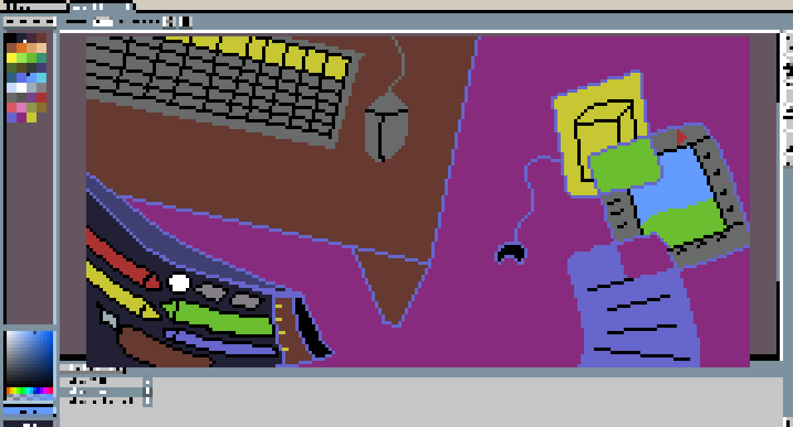
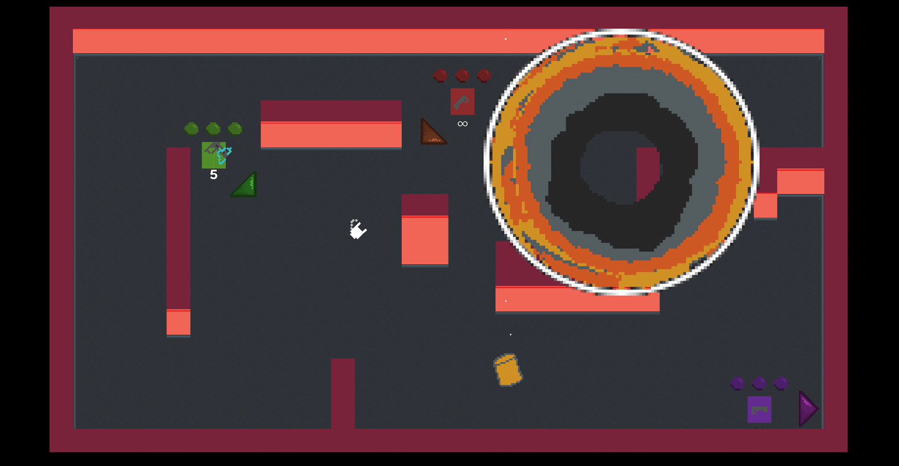
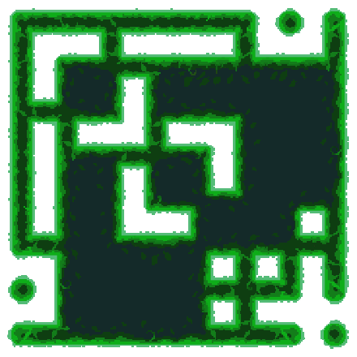
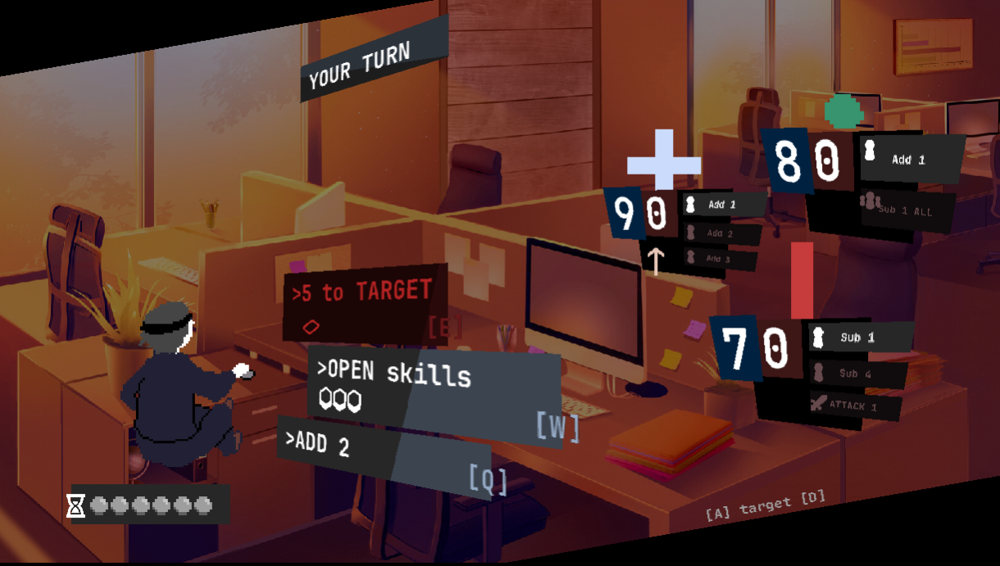

GameTionery is made by a group of passionate game developers, made to show you the world of game development and the games we've made. As video games are highly complex and multifaceted, we aim to introduce you to making games through showing some of our first experiences creating games for the first time! Here you can find art assets, reviews of software and techniques, and even a scene breakdown for one of our games. Whether you're an aspiring developer or just a video game enthusiast, we believe this site is the one for you!

Curious about the specific parts that come together to make a game? Check out our map of MiniShootArena, a Godot-made multiplayer game, featuring a full breakdown of each part!

Want to see some of the art and assets made for our games? Check out the catalogue, which contains sprite sheets, textures, tilemaps, and more.

Want to play something? Check out the free browser version of our game jame project Nine to NaN here!
Copyright © 2026 TinjTeam. All rights reserved.
Hosted on GitHub Pages